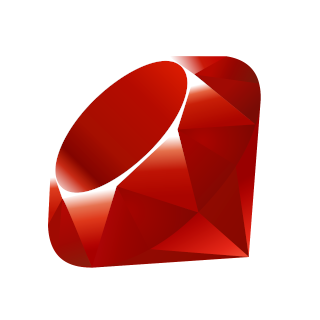
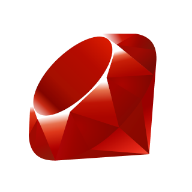

Wprowadzenie do systemów internetowych
Projektowanie i programowanie systemów internetowych I
wykład 1 z 15

mgr inż. Krzysztof Rewak
Zakład Informatyki, Wydział Nauk Technicznych i Ekonomicznych
Collegium Witelona Uczelnia Państwowa
Agenda
- Ramowy plan semestru
- Warunki zaliczenia kursu
- Wprowadzenie do systemów internetowych
- Podsumowanie
Planowany rozkład jazdy: luty-marzec
- Wprowadzenie do systemów internetowych (jesteśmy tutaj!)
- Statyczne strony internetowe
- Narzędzia deweloperskie
- Środowisko deweloperskie
- Protokół HTTP
- Wzorzec architektoniczny MVC
- Implementacja domeny
Planowany rozkład jazdy: kwiecień-maj
- Internetowe bazy danych
- Mapowanie relacyjno-obiektowe
- Uwierzytelnianie i autoryzacja użytkowników
- Asynchroniczne interakcje z serwerem
- Responsywny i dostępny frontend
- Mechanizmy pamięci podręcznej i optymalizacja
- Wdrażanie systemów internetowych
- Lokalizacja, skalowanie, dobre praktyki i inne
Formy zajęć
wykład to teoretyczna część kursu; podczas piętnsatu spotkań zostaną
przedstawione najważniejsze zagadnienia związane z aplikacjami webowymi, pokazane metodologie pracy oraz
opisane współczesne narzędzia do tworzenia systemów internetowych
projekt to praktyczna część kursu; w trakcie semestru studenci będą
pracować zespołowo nad projektowaniem, implementacją oraz wdrożeniem konkretnego systememu internetowego
Wykład kończy się egzaminem podsumowującym wiedzę przyswojoną w trakcie semestru. Egzamin - w zależności
od liczby przystępujących osób - odbędzie się w formie pisemnej lub ustnej. Zagadnienia do egzaminu
zostaną przedstawione na ostatnim wykładzie.
Student, który otrzyma z projektu ocenę niedostateczną, nie może podchodzić do egzaminu.
Ponadto na wykładach:
a) będzie sprawdzana lista obecności na zasadzie białej listy
b) będzie mierzona (pozytywna i negatywna) aktywność studentów.
Zachęcam do uczęszczania na wykłady.
Ocena końcowa
Ω = 0.3 W + 0.7 L
Ocena niedostateczna z jednej formy rzutuje na ocenę niedostateczną za całość!
Bonusy
Osoby, które otrzymały projektu ocenę bardzo dobrą, zostaną zwolnione z
egzaminu z przepisaną oceną.
Wysoka frekwencja oraz aktywność na wykładach mogą rzutować na obniżenie progu przepisywanej oceny do
dobrej plus dla indywidualnych studentów.
Quizy
W trakcie semestru organizowane będą dodatkowe zwolnienia z egzaminu w formie interaktywnych quizów,
których zakres będzie obejmował materiał z bieżącego wykładu.
Student, który otrzyma najwięcej punktów z danego quizu, zostanie zwolniony z egzaminu z przepisaną oceną
z projektu.
Definicja
Systemem internetowym można nazwać program komputerowy umieszczony i
uruchomiony na serwerze. Powinien być dostępny przez sieć Internet poprzez
konkretny adres IP i port lub domenę.
Nie należy utożsamiać systemów internetowych z stronami internetowymi, ponieważ te drugie są jedynie
częścią ogromu zastosowań pierwszych.
schemat budowy klasycznego systemu internetowego
Systematyka: Podmiot wykonujący
podział na podmiot wykonujący
Systematyka: Przeznaczenie
podział na przeznaczenie
Systematyka: Języki programowania


 


Highlights
- system internetowy to nie strona internetowa
- systemy internetowe są podstawą większości systemów informatycznych
- backend realizowany jest na zdalnym serwerze, a frontend - na zasobach klienta
- systemy internetowe można tworzyć w różnych językach programowania
- frameworki oszczędzają czas i pieniądze
Źródła i do dalszego poczytania